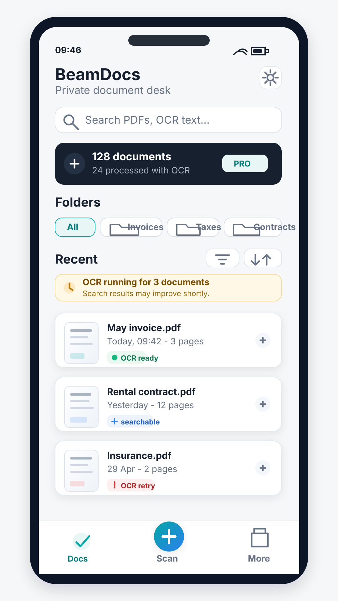

No account
BeamDocs does not require registration before you can scan and save documents.
Private Android PDF scanner
Scan invoices, receipts, contracts and everyday paperwork into PDFs that stay on your device. No account, no document cloud, no ads.

Privacy at a glance
BeamDocs does not require registration before you can scan and save documents.
Scans, PDFs, OCR text, folders and Smart Organization choices are stored locally.
OCR and organization happen on your device. Document contents are not sent to OfflineNode.
If you send a PDF to email or cloud storage, that happens outside BeamDocs and only when you choose it.
Workflow
Free vs Pro
Free
Pro
OfflineNode